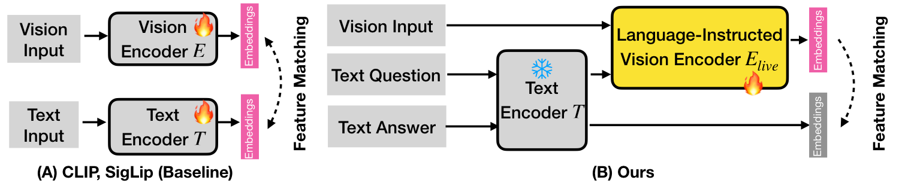
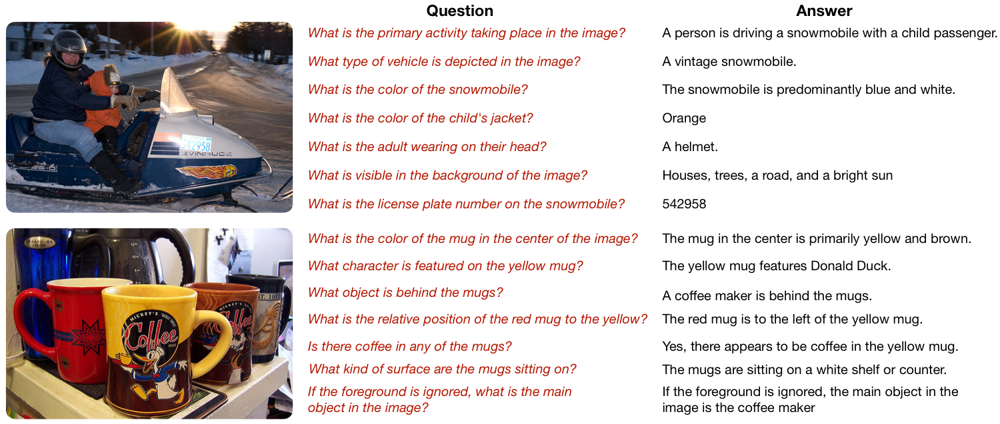
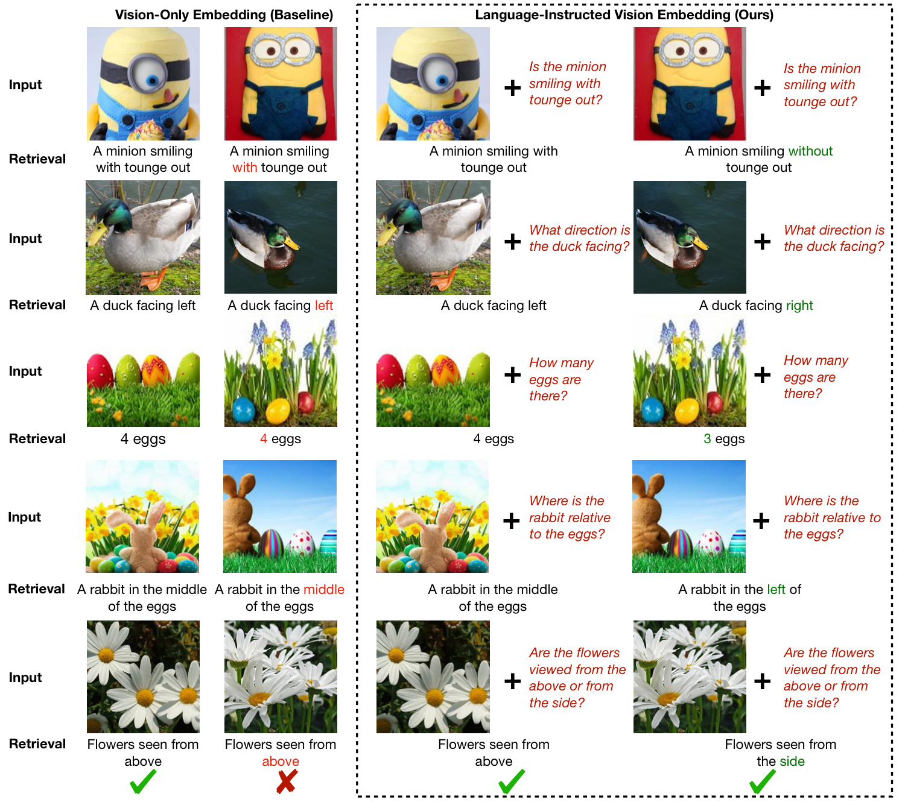
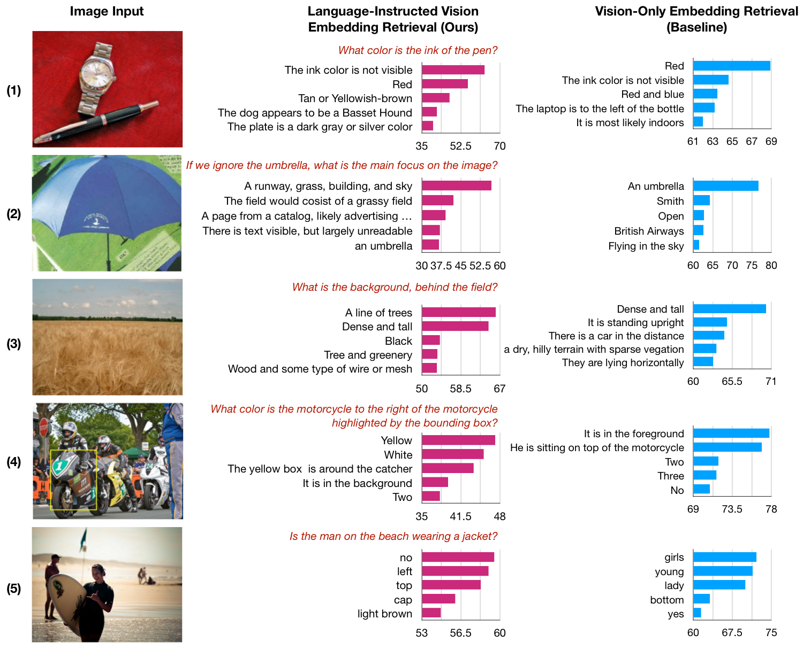
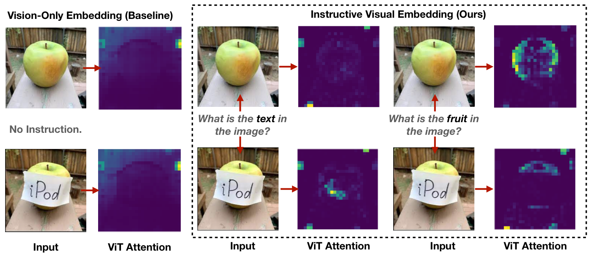
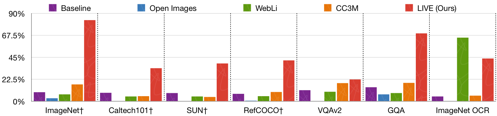
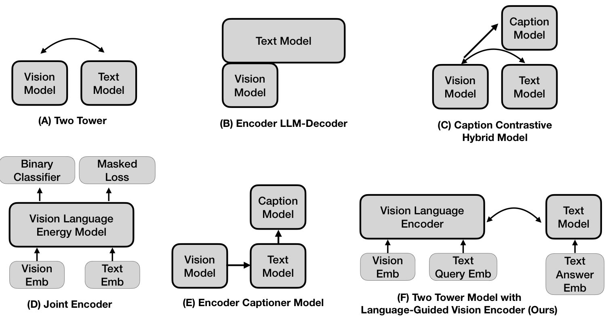

ICLR 2026
We introduce LIVE, a framework that enables vision encoders to dynamically adapt their representations based on language instructions. By distilling knowledge from LLMs into vision encoders via contrastive learning, LIVE achieves 34-point improvement on hallucination benchmarks and outperforms LLM-based methods with 10x fewer parameters.
A hallmark of human vision is its active, selective nature. Guided by internal goals or task demands, we focus on relevant parts of the visual world while ignoring distractions. In contrast, today's leading vision models produce static, pre-computed representations without reference to the specific query they are meant to serve.
We address this challenge with LIVE (Language-Instructed Vision Embeddings), a simple and effective framework for creating language-steered vision embeddings. LIVE enables dynamic, fine-grained control of a vision encoder by training it to follow textual instructions. We use LLMs to generate synthetic instruction-response pairs, which we combine with images into contrastive triplets. This teaches the vision encoder to steer its embeddings based on textual commands, allowing it to highlight relevant attributes or suppress adversarial cues.
Once trained, LIVE yields standalone, language-steered embeddings that downstream tasks can use directly—no large LLMs or task-specific fine-tuning required. Trained on synthetic ImageNet-based data, LIVE generalizes strongly to real, unseen tasks: it reduces hallucinations by 34 points on MMVP, and surpasses LLM-based counterparts on GQA by 7 points with less than 10% of their parameters.

Instructive Vision Encoder Design. Prior vision-language models like CLIP and SigLip use two-tower architecture with separate vision and text encoders. We reuse the text tower to embed the query, apply a projection layer, and feed it into the vision transformer alongside the input image. The text encoder is frozen; only the vision encoder is trained.
Standard vision-language models generate a general-purpose embedding intended to capture all relevant information in an image. However, to serve diverse downstream tasks, these representations must be versatile and precise. We propose a language-conditioned vision encoder that dynamically processes the image based on a textual instruction:
This formulation allows the vision encoder to focus its computation on the aspects of the image most relevant to the language instruction, producing a targeted, task-specific representation.

Triplet Training Data from LLM. We apply Gemini-2.0-Flash to automatically create diversified, open-world triplet data containing image, query, and answer. This method moves beyond generic questions from existing image-text data, allowing for nuanced and sophisticated exploration of individual image content.

LIVE Reduces Visual Hallucinations (MMVP Benchmark). State-of-the-art vision-only embeddings (left column) must perceive the entire scene without query-specific guidance, making them prone to hallucination when precise details are needed. By modulating visual computation with the input text query (right column), our method selectively focuses on relevant information, mitigating hallucinations.
| Method | Params (M) | Average Acc. |
|---|---|---|
| OpenAI ViT-L-14 | 427.6 | 19.3% |
| SigLIP ViT-SO-14 | 878.0 | 37.0% |
| LLaVa | ~13,000 | 31.3% |
| BRAVE | ~10,300 | 42.0% |
| LIVE (Ours) | 891.0 | 76.3% |
Our method achieves a 34-point improvement over prior state-of-the-art.

LIVE's Retrieval based on Language Instructions. Our method demonstrates superior retrieval accuracy: (1) recognizes non-visible elements, (2) follows instructions to ignore distractors, (3) attends to specific factors, (4) performs basic spatial reasoning, (5) perceives relationships.

Zero-Shot Language Instructions Steer Visual Attention. Unlike baseline encoders producing global attention (SigLip, left), our LIVE uses instructions to focus dynamically. Prompting for "text" highlights the "iPod" label; prompting for "fruit" highlights only the apple, ignoring the label.
| Method | Accuracy (%) |
|---|---|
| BLIP-2 | 44.7 |
| InstructBLIP | 49.5 |
| BRAVE | 52.7 |
| LLaVa | 63.3 |
| LIVE (Ours, ViT-B-16) | 71.2 |

Impact of Triplet Training Data on LIVE Method's Accuracy. Models trained with our LLM-generated ImageNet triplet dataset significantly outperform those trained on existing image-language datasets across diverse benchmarks. This highlights the benefit of using LLMs to overcome traditional data limitations for training transferable vision encoders.

Comparison with baseline methods. LIVE consistently outperforms vision-only and fusion-based baselines across multiple benchmarks.
@inproceedings{mao2026live,
title={Language-Instructed Vision Embeddings for Controllable and Generalizable Perception},
author={Mao, Chengzhi and Lin, Xudong and Chu, Wen-Sheng},
booktitle={International Conference on Learning Representations (ICLR)},
year={2026}
}